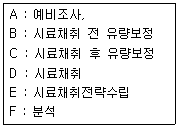
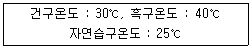
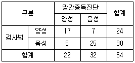
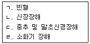

산업위생관리기사 (2018-04-28 기출문제)
1과목: 산업위생학개론
1. 미국산업위생학술원(AAIH)에서 채택한 산업위생전문가로서의 책임에 해당되지 않는 것은?
- 직업병을 평가하고 관리한다.
- 성실성과 학문적 실력에서 최고 수준을 유지한다.
- 과학적 방법의 적용과 자료 해석의 객관성 유지
- 전문분야로서의 산업위생을 학문적으로 발전시킨다.
(정답률: 85%)

2. 산업안전보건법상 작업장의 체적이 150m3 이면 납의 1시간당 허용소비량(1시간당 소비하는 관리대상유해물질의 양)은 얼마인가?
- 1g
- 10g
- 15g
- 30g
(정답률: 51%)
3. 산업 스트레스의 반응에 따른 심리적 결과에 해당되지 않는 것은?
- 가정문제
- 돌발적사고
- 수면방해
- 성(性)적 역기능
(정답률: 71%)
4. 화학물질의 노출기준에 관한 설명으로 맞는 것은?
- 발암성 정보물질의 표기로 "2A"는 사람에게 충분한 발암성 증거가 있는 물질을 의미한다.
- "Skin" 표시 물질은 점막과 눈 그리고 경피로 흡수되어 전신 영향을 일으킬 수 있는 물질을 의미한다.
- 발암성 정보물질의 표기로 "2B"는 시험동물에서 발암성 증거가 충분히 있는 물질을 의미한다.
- 발암성 정보물질의 표기로 "1"은 사람이나 동물에서 제한된 증거가 있지만, 구분 "2"로 분류하기에는 증거가 충분하지 않은 물질을 의미한다.
(정답률: 82%)
5. 산업재해 발생의 역학적 특성에 대한 설명으로 틀린 것은?
- 여름과 겨울에 빈발한다.
- 손상종류로는 골절이 가장 많다.
- 작은 규모의 산업체에서 재해율이 높다.
- 오전 11~12시, 오후 2~3시에 빈발한다.
(정답률: 70%)
6. 재해예방의 4원칙에 해당하지 않은 것은?
- 손실 우연의 원칙
- 예방 가능의 원칙
- 대책 선정의 원칙
- 원인 조사의 원칙
(정답률: 83%)
7. 실내 환경과 관련된 질환의 종류에 해당되지 않는 것은?
- 빌딩증후군(SBS)
- 새집증후군(SHS)
- 시각표시단말증후군(VDTS)
- 복합 화학물질 과민증(MCS)
(정답률: 87%)
8. 누적외상성장애(CTDs : Cumulative Trauma Disorders)의 원인이 아닌 것은?
- 불안전한 자세에서 장기간 고정된 한 가지 작업
- 고온 작업장에서 갑작스럽게 힘을 주는 전신작업
- 작업속도가 빠른 상태에서 힘을 주는 반복작업
- 작업내용의 변화가 없거나 휴식시간 없이 손과 팔을 과도하게 사용하는 작업
(정답률: 86%)
9. 실내공기질관리법상 다중이용시설의 실내공기질 권고기준 항목이 아닌 것은?(문제 오류로 가답안 발표시 4번으로 발표되었지만 확정답안 발표시 1, 2, 4번이 정답 처리 되었습니다. 여기서는 가답안인 4번을 누르면 정답 처리 됩니다.)
- 석면
- 오존
- 라돈
- 일산화탄소
(정답률: 64%)
10. 산업위생의 정의에 포함되지 않는 것은?
- 예측
- 평가
- 관리
- 보상
(정답률: 92%)
11. PWC가 16kcal/min인 근로자가 1일 8시간 동안 물체를 운반하고 있다. 이때 작업대사량은 6kcal/min이고, 휴식시의 대사량은 2kcal/min이다. 작업시간은 어떻게 배분하는 것이 이상적인가?
- 5분 휴식, 55분 작업
- 10분 휴식, 50분 작업
- 15분 휴식, 45분 작업
- 25분 휴식, 35분 작업
(정답률: 79%)
12. 전신피로 정도를 평가하기 위해 작업 직후의 심박수를 측정한다. 작업종료 후 30~60초, 60~90초, 150~180초 사이의 평균 맥박수가 각각 HR30~60, HR60~90, HR150~180일 때, 심한 전신피로 상태로 판단되는 경우는?
- HR30~60이 110 을 초과하고, HR150~180와 HR60~90의 차이가 10 미만인 경우
- HR60~90이 110 을 초과하고, HR150~180와 HR30~60의 차이가 10 미만인 경우
- HR150~180이 110 을 초과하고, HR30~60와 HR60~90의 차이가 10 미만인 경우
- HR30~60, HR150~180의 차이가 10 이상이고, HR150~180와 HR60~90의 차이가 10 미만인 경우
(정답률: 79%)
13. 매년 "화학물질과 물리적 인자에 대한 노출기준 및 생물학적 노출지수"를 발간하여 노출기준 제정에 있어서 국제적으로 선구적인 역할을 담당하고 있는 기관은?
- 미국산업위생학회(AIHA)
- 미국직업안전위생관리국(OSHA)
- 미국국립산업안전보건연구원(NIOSH)
- 미국정부산업위생전문가협의회(ACGIH)
(정답률: 76%)
14. 알레르기성 접촉 피부염의 진단법은 무엇인가?
- 첩포시험
- X-ray검사
- 세균검사
- 자외선검사
(정답률: 89%)
15. 직업병의 예방대책 중 일반적인 작업환경관리의 원칙이 아닌 것은?
- 대치
- 환기
- 격리 또는 밀폐
- 정리정돈 및 청결유지
(정답률: 75%)
16. 신체의 생활기능을 조절하는 영양소이며 작용면에서 조절소로만 나열된 것은?
- 비타민, 무기질, 물
- 비타민, 단백질, 물
- 단백질, 무기질, 물
- 단백질, 지방, 탄수화물
(정답률: 67%)
17. 산업안전보건법령상 물질안전보건자료(MSDS) 작성 시 포함되어야 할 항목이 아닌 것은?
- 유해성, 위험성
- 안전성 및 반응성
- 사용빈도 및 타당성
- 노출방지 및 개인보호구
(정답률: 81%)
18. 앉아서 운전작업을 하는 사람들의 주의사항에 대한 설명으로 틀린 것은?
- 큰 트럭에서 내릴 때는 뛰어내려서는 안된다.
- 차나 트랙터를 타고 내릴 때 몸을 회전해서는 안된다.
- 운전대를 잡고 있을 때에서 최대한 앞으로 기울이는 것이 좋다.
- 방석과 수건을 말아서 허리에 받쳐 최대한 척추가 자연곡선을 유지하도록 한다.
(정답률: 91%)
19. 체중이 60kg인 사람이 1일 8시간 작업 시 안전흡수량이 1mg/kg인 물질의 체내 흡수를 안전흡수량 이하로 유지하려면 공기중 농도를 몇 mg/m3이하로 하여야 하는가? (단, 작업시 폐환기율은 1.25m3/hr, 체내 잔류율은 1.0으로 가정한다)
- 0.06mg/m3
- 0.6mg/m3
- 6mg/m3
- 60mg/m3
(정답률: 69%)
20. 산업안전보건법령상 보건관리자의 자격에 해당하지 않는 사람은?
- 「의료법」에 따른 의사
- 「의료법」에 따른 간호사
- 「국가기술자격법」에 따른 산업안전기사
- 「산업안전보건법」에 따른 산업보건지도사
(정답률: 82%)
2과목: 작업위생측정 및 평가
21. 다음중 원자흡광광도계에 대한 설명과 가장 거리가 먼 것은?
- 증기발생 방식은 유기용제 분석에 유리하다.
- 흑연로장치는 감도가 좋으므로 생물학적 시료분석에 유리하다.
- 원자화방법는 불꽃방식, 비불꽃방식, 증기발생 방식이 있다.
- 광원, 원자화장치, 단색화장치, 검출기, 기록계 등으로 구성되어 있다.
(정답률: 41%)
22. 어느 작업장의 n-Hexane의 농도를 측정한 결과가 24.5ppm, 20.2ppm, 25.1ppm, 22.4ppm, 23.9ppm일 때, 기하 평균값은 약 몇 ppm인가?
- 21.2
- 22.8
- 23.2
- 24.1
(정답률: 68%)
23. 다음 유기용제 중 실리카겔에 대한 친화력이 가장 강한 것은?
- 케톤류
- 알콜류
- 올레핀류
- 에스테르류
(정답률: 71%)
24. 레이저광의 노출량을 평가할 때 주의사항이 아닌 것은?
- 직사광과 확산광을 구별하여 사용한다.
- 각막 표면에서의 조사량 또는 노출량을 측정한다.
- 눈의 노출기준은 그 파장과 관계없이 측정한다.
- 조사량의 노출기준은 1mm 구경에 대한 평균치이다.
(정답률: 78%)
25. 화학적인자에 대한 작업환경측정 순서를[보기]를 참고하여 올바르게 나열한 것은?

- A→B→C→D→E→F
- A→B→E→D→C→F
- A→E→D→B→C→F
- A→E→B→D→C→F
(정답률: 80%)
26. 다음 화학적 인자 중 농도의 단위가 다른 것은?
- 흄
- 석면
- 분진
- 미스트
(정답률: 83%)
27. 옥외(태양광선이 내리쬐지 않는 장소)의 온열조건이 다음과 같은 경우에 습구흑구온도 지수(WBGT)는?

- 28.5℃
- 29.5℃
- 30.5℃
- 31.0℃
(정답률: 76%)
28. 다음 중 파과 용량에 영향을 미치는 요인과 가장 거리가 먼 것은?
- 포집된 오염물질의 종류
- 작업장의 온도
- 탈착에 사용하는 용매의 종류
- 작업장의 습도
(정답률: 61%)
29. 음압이 10N/m2일때, 음압수준은 약 몇 dB인가? (단, 기준음압은 0.00002N/m2이다.)
- 94
- 104
- 114
- 124
(정답률: 68%)
30. 흡광광도계에서 단색광이 어떤 시료용액을 통과할 때 그 빛의 60%가 흡수될 경우, 흡광도는 약 얼마인가?
- 0.22
- 0.37
- 0.40
- 1.60
(정답률: 60%)
31. 분진 채취 전후의 여과지 무게가 각각 21.3mg, 25.8mg이고, 개인시료채취기로 포집한 공기량이 450L일 경우 분진농도는 약 몇 mg/m3인가?
- 1
- 10
- 20
- 25
(정답률: 75%)
32. 다음 중 일정한 온도조건에서 가스의 부피와 압력이 반비례하는 것과 가장 관계가 있는 것은?
- 보일의 법칙
- 샤를의 법칙
- 라울의 법칙
- 게이-루삭의 법칙
(정답률: 78%)
33. 다음 중 유도결합 플라스마 원자발광분석기의 특징과 가장 거리가 먼 것은?
- 분광학적 방해 영향이 전혀 없다.
- 검량선의 직선성 범위가 넓다.
- 동시에 여러 성분의 분석이 가능하다.
- 아르곤 가스를 소비하기 때문에 유지비용이 많이 든다.
(정답률: 55%)
34. 다음 2차 표준기구중 주로 실험실에서 사용하는 것은?
- 비누거품 미터
- 폐활량계
- 유리 피스톤 미터
- 습식테스트 미터
(정답률: 80%)
35. 소음수준의 측정 방법에 관한 설명으로 옳지 않은 것은? (단, 고용노동부 고시를 기준으로 한다.)
- 소음계의 청감보정회로는 A특성으로 하여야 한다.
- 연속음 측정 시 소음계 지시침의 동작은 빠른(Fast) 상태로 한다.
- 측정위치는 지역시료채취 방법의 경우에 소음측정기를 측정대상이 되는 근로자의 주 작업행동 범위의 작업근로자 귀 높이에 설치한다.
- 측정시간은 1일 작업시간동안 6시간 이상 연속 측정하거나 작업시간을 1시간 간격으로 나누어 6회 이상 측정한다.
(정답률: 74%)
36. 다음 중 직독식 기구에 대한 설명과 가장 거리가 먼 것은?
- 측정과 작동이 간편하여 인력과 분석비를 절감할 수 있다.
- 연속적인 시료채취전략으로 작업시간 동안 완전한 시료채취에 해당된다.
- 현장에서 실제 작업시간이나 어떤 순간에서 유해인자의 수준과 변화를 쉽게 알 수 있다.
- 현장에서 즉각적인 자료가 요구될 때 민감성과 특이성이 있는 경우 매우 유용하게 사용될 수 있다.
(정답률: 66%)
37. 산업위생 통계에 적용되는 용어 정의에 대한 내용으로 옳지 않은 것은?
- 상대오차=[(근사값-참값)/참값]으로 표현된다.
- 우발오차란 측정기기 또는 분석기기의 미비로 기인되는 오차이다.
- 유효숫자란 측정 및 분석 값의 정밀도를 표시하는 데 필요한 숫자이다.
- 조화평균이란 상이한 반응을 보이는 집단의 중심경향을 파악하고자 할 때 유용하게 이용된다.
(정답률: 58%)
38. kata 온도계로 불감기류를 측정하는 방법에 대한 설명으로 틀린 것은?
- kata 온도계의 구(球)부를 50~60℃의 온수에 넣어 구부의 알콜을 팽창시켜 관의 상부 눈금까지 올라가게 한다.
- 온도계를 온수에서 꺼내어 구(球)부를 완전히 닦아내고 스탠드에 고정한다.
- 알콜의 눈금이 100℉에서 65℉까지 내려가는데 소요되는 시간을 초시계 4~5회 측정하여 평균을 낸다.
- 눈금 하강에 소요되는 시간으로 kata 상수를 나눈 값 H는 온도계의 구부 1cm2에서 1초 동안에 방산되는 열량을 나타낸다.
(정답률: 72%)
39. 50% 톨루엔, 10%벤젠, 40% 노말헥산으로 혼합된 원료를 사용 할 때, 이 혼합물이 공기중으로 증발한다면 공기 중 허용농도는 약 몇 mg/m3인가? (단, 각각의 노출기준은 톨루엔 375mg/m3, 벤젠 30mg/m3, 노말헥산 180mg/m3이다)
- 115
- 125
- 135
- 145
(정답률: 64%)
40. 어느 작업장에서 소음의 음압수준(dB)을 측정한 결과 85, 87, 84, 86, 89, 81, 82, 84, 83, 88 일 때, 중앙값은 몇 dB인가?
- 83.5
- 84
- 84.5
- 84.9
(정답률: 75%)
3과목: 작업환경관리대책
41. 다음 중 사용물질과 덕트 재질의 연결이 옳지 않은 것은?
- 알칼리 - 강판
- 전리방사선 - 중질 콘크리트
- 주물사, 고온가스 - 흑피 강판
- 강산, 염소계 용제 - 아연도금 강판
(정답률: 56%)
42. 속도압에 대한 설명으로 틀린 것은 ?
- 속도압은 항상 양압 상태이다.
- 속도압은 속도에 비례한다.
- 속도압은 중력가속도에 반비례한다.
- 속도압은 정지상태에 있는 공기에 작용하여 속도 또는 가속을 일으키게 함으로써 공기를 이동하게 하는 압력이다.
(정답률: 56%)
43. 후드로부터 0.25m 떨어진 곳에 있는 금속제품의 연마 공정에서 발생되는 금속먼지를 제거하기 위해 원형후드를 설치하였다면, 환기량은 약 몇 m3/sec인가? (단, 제어속도는 2.5m/sec, 후드직경은 0.4m이고, 플랜지는 부착되지 않았다. )
- 1.9
- 2.3
- 3.2
- 4.1
(정답률: 58%)
44. 온도 125℃, 800mmHg인 관내로 100m3/min의 유량의 기체가 흐르고 있다. 표준상태에서 기체의 유량은 약 몇 m3/min 인가? (단, 표준상태는 20℃,760mmHg로 한다.)
- 52
- 69
- 77
- 83
(정답률: 46%)
45. 다음중 국소배기시설의 필요 환기량을 감소시키기 위한 방법과 가장 거리가 먼 것은?
- 가급적 공정의 포위를 최소화한다.
- 후드 개구면에서 기류가 균일하게 분포되도록 설계한다.
- 포집형이나 레시버형 후드를 사용할 때에는 가급적 후드를 배출 오염원에 가깝게 설치한다.
- 공정에서 발생 또는 배출되는 오염물질의 절대량을 감소시킨다.
(정답률: 70%)
46. 다음 중 보호구의 보호 정도를 나타내는 할당보호계수(APF)에 관한 설명으로 가장 거리가 먼 것은?
- 보호구 밖의 유량과 안의 유량 비(Qo/Qi)로 표현된다.
- APF를 이용하여 보호구에 대한 최대사용농도를 구할 수 있다.
- APF가 100인 보호구를 착용하고 작업장에 들어가면 착용자는 외부 유해물질로부터 적어도 100배 만큼의 보호를 받을 수 있다는 의미이다.
- 일반적인 보호계수 개념의 특별한 적용으로서 적절히 밀착된 호흡기보호구를 훈련된 일련의 착용자들이 작업장에서 착용하였을 때 기대되는 최소 보호정도치를 말한다.
(정답률: 54%)
47. A용제가 800m3 체적을 가진 방에 저장되어 있다. 공기를 공급하기 전에 측정한 농도가400ppm이었을 때, 이 방을 환기량 40m3/분으로 환기한다면 A용제의 농도가 100ppm으로 줄어드는데 걸리는 시간은? (단, 유해물질은 추가적으로 발생하지 않고 고르게 분포되어 있다고 가정한다.)
- 약16분
- 약28분
- 약34분
- 약42분
(정답률: 67%)
48. 산업위생보호구의 점검, 보수 및 관리방법에 관한 설명 중 틀린 것은?
- 보호구의 수는 사용하여야 할 근로자의 수 이상으로 준비한다.
- 호흡용보호구는 사용 전, 사용 후 여재의 성능을 점검하여 성능이 저하된 것은 폐기, 보수, 교환 등의 조치를 위한다.
- 보호구의 청결 유지에 노력하고, 보관할 때에는 건조한 장소와 분진이나 가스 등에 영향을 받지 않는 일정한 장소에 보관한다.
- 호흡용보호구나 귀마개 등은 특정 유해물질 취급이나 소음에 노출될 때 사용하는 것으로서 그 목적에 따라 반드시 공용으로 사용해야 한다.
(정답률: 86%)
49. 국소배기장치를 설계하고 현자에서 효율적으로 적용하기 위해서는 적절한 제어속도가 필요하다. 이때 제어속도의 의미로 가장 적절한 것은 ?
- 공기정화기의 내부 공기의 속도
- 발생원에서 배출되는 오염물질의 발생 속도
- 발생원에서 오염물질의 자유공간으로 확산되는 속도
- 오염물질을 후드 안쪽으로 흡인하기 위하여 필요한 최소한의 속도
(정답률: 78%)
50. 덕트의 속도압이 35mmH2O, 후드의 압력 손실이 15mmH2O일 때, 후드의 유입계수는 약 얼마인가?
- 0.54
- 0.68
- 0.75
- 0.84
(정답률: 43%)
51. 다음 중 stokes 침강법칙에서 침강속도에 대한 설명으로 옳지 않은 것은? (단, 자유공간에서 구형의 분진 입자를 고려한다.)
- 기체와 분진입자의 밀도 차에 반비례한다.
- 중력 가속도에 비례한다.
- 기체의 점성에 반비례한다.
- 분자입자 직경의 제곱에 비례한다.
(정답률: 69%)
52. A물질의 증기압이 50mmHg일때, 포화증기농도(%)는? (단, 표준상태를 기준으로 한다.)
- 4.8
- 6.6
- 10.0
- 12.2
(정답률: 79%)
53. 작업환경의 관리원칙 중 대치로 적절하지 않은 것은?
- 성냥 제조시에 황린 대신 적린을 사용한다.
- 분말로 출하되는 원료로 고형상태의 원료로 출하한다.
- 광산에서 광물을 채취할 때 습식 공정 대신 건식 공정을 사용한다.
- 단열재석면을 대신하여 유리섬유나 암면 또는 스트리폼 등을 사용한다.
(정답률: 83%)
54. 작업환경에서 환기시설 내 기류에는 유체역학적 원리가 적용된다. 다음 중 유체역학적 원리의 전체조건과 가장 거리가 먼 것은?
- 공기는 건조하다고 가정한다.
- 공기의 압축과 팽창은 무시한다.
- 환기시설 내외의 열교환은 무시한다.
- 대부분 환기시설에서는 공기 중에 포함된 유해물질의 무게와 용량을 고려한다.
(정답률: 69%)
55. 산업위생관리를 작업환경관리, 작업관리, 건강관리로 나눠서 구분할 때, 다음 중 작업환경관리와 가장 거리가 먼 것은?
- 유해 공정의 격리
- 유해 설비의 밀폐화
- 전체환기에 의한 오염물질의 희석 배출
- 보호구 사용에 의한 유해물질의 인체 침입 방지
(정답률: 75%)
56. 원심력집진장치에 관한 설명 중 옳지 않은 것은?
- 비교적 적은 비용으로 집진이 가능하다.
- 분진의 농도가 낮을수록 집진효율이 증가한다.
- 함진가스에 선회류를 일으키는 원심력을 이용한다.
- 입자의 크기가 크고 모양이 구체에 가까울수록 집진효율이 증가한다.
(정답률: 61%)
57. 송풍기의 송풍량이 2m3/sec이고, 전압이 100mmH2O일 때, 송풍기의 소요동력은 약 몇kW인가? (단, 송풍기의 효율이 75% 이다.)
- 1.7
- 2.6
- 4.4
- 5.3
(정답률: 64%)
58. 보호구의 재질에 따른 효과적 보호가 가능한 화학물질을 잘못 짝지은 것은?
- 가죽 - 알콜
- 천연고무 - 물
- 면 - 고체상 물질
- 부틸고무 - 알콜
(정답률: 71%)
59. 다음 중 장기간 사용하지 않았던 오래된 우물속으로 작업을 위하여 들어갈 때 가장 적절한 마스크는?
- 호스마스크
- 특급의 방진마스크
- 유기가스용 방독마스크
- 일산화탄소용 방독마스크
(정답률: 77%)
60. 전기집진장치의 장점으로 옳지 않은 것은?
- 가연성 입자의 처리에 효율적이다.
- 넓은 범위의 입경과 분진농도에 집진효율이 높다.
- 압력손실이 낮으므로 송풍기의 가동비용이 저렴하다.
- 고온 가스를 처리할 수 있어 보일러와 철강로 등에 설치할 수 있다.
(정답률: 69%)
4과목: 물리적유해인자관리
61. 한랭노출 시 발생하는 신체적 장해에 대한 설명으로 틀린 것은 ?
- 동상은 조직의 동결을 말하며, 피부의 이론상 동결온도는 약 -1℃정도이다.
- 전신 체온강하는 장시간의 한랭 노출과 체열상실에 따라 발생하는 급성 중증장해이다.
- 참호족은 동결 온도 이하의 찬공기에 단기간 접촉으로 급격한 동결이 발생하는 장애이다.
- 침수족은 부종, 저림, 작열감, 소양감 및 심한 동통을 수반하며, 수포, 궤양이 형성되기도 한다.
(정답률: 70%)
62. 방진재인 금속스프링의 특징이 아닌 것은?
- 공진 시에 전달율이 좋지 않다.
- 환경요소에 대한 저항이 크다.
- 저주파 차진에 좋으며 감쇠가 거의 없다.
- 다양한 형상으로 제작이 가능하며 내구성이 좋다.
(정답률: 45%)
63. 비전리 방사선 중 보통광선과는 달리 단일파장이고 강력하고 예리한 지향성을 지닌 광선은 무엇인가?
- 적외선
- 마이크로파
- 가시광선
- 레이저광선
(정답률: 77%)
64. 감압에 따른 인체의 기포 형성량을 좌우하는 요인과 가장 거리가 먼 것은?
- 감압속도
- 산소공급량
- 조직에 용해된 가스량
- 혈류를 변화시키는 상태
(정답률: 60%)
65. 감압병 예방을 위한 이상기압 환경에 대한 대책으로 적절하지 않은 것은?
- 작업시간을 제한한다.
- 가급적 빨리 감압시킨다.
- 순환기에 이상이 있는 사람은 취업 또는 작업을 제한한다.
- 고압환경에서 작업 시 헬륨-산소혼합가스등으로 대체하여 이용한다.
(정답률: 80%)
66. 정밀작업과 보통작업을 동시에 수행하는 작업장의 적정 조도는 ?
- 150럭스 이상
- 300럭스 이상
- 450럭스 이상
- 750럭스 이상
(정답률: 62%)
67. 전기성 안염(전광선 안염)과 가장 관련이 깊은 비전리 방사선은?
- 자외선
- 가시광선
- 적외선
- 마이크로파
(정답률: 52%)
68. 고압환경의 영향 중 2차적인 가압현상에 관한 설명으로 틀린 것은?
- 4기압 이상에서 공기 중의 질소 가스는 마취 작용을 나타낸다.
- 이산화탄소의 증가는 산소의 독성과 질소의 마취작용을 촉진시킨다.
- 산소의 분압이 2기압을 넘으면 산소중독증세가 나타난다.
- 산소중독은 고압산소에 대한 노출이 중지되어도 근육경련, 환청 등 후유증이 장기간 계속된다.
(정답률: 69%)
69. 현재 총흡음량이 2000 sabins인 작업장의 천장에 흡음물질을 첨가하여 3000 sabins을 더할 경우 소음감소는 어느 정도가 예측되겠는가?
- 4dB
- 6dB
- 7dB
- 10dB
(정답률: 65%)
70. 인체와 작업환경 사이의 열교환이 이루어지는 조건에 해당되지 않는 것은?
- 대류에 의한 열교환
- 복사에 의한 열교환
- 증발에 의한 열교환
- 기온에 의한 열교환
(정답률: 65%)
71. 산업안전보건법령상 적정공기의 범위에 해당하는 것은?
- 산소농도 18%미만
- 이황화탄소 10%미만
- 탄산가스 농도 10%미만
- 황화수소의 농도 10ppm미만
(정답률: 65%)
72. 국소진동에 의하여 손가락의 창백, 청색증, 저림, 냉감, 동통이 나타나는 장해를 무엇이라 하는가?
- 레이노드 증후군
- 수근관통증 증후군
- 브라운세커드 증후군
- 스티브블래스 증후군
(정답률: 85%)
73. 1000Hz에서의 음압레벨을 기준으로 하여 등청감곡선을 나타내는 단위로 사용되는 것은?
- mel
- bell
- phon
- sone
(정답률: 72%)
74. 빛과 밝기에 관한 설명으로 틀린 것은?
- 광도의 단위로는 칸델라(candela)를 사용한다.
- 광원으로부터 한 방향으로 나오는 빛의 세기를 광속이라 한다.
- 루멘(Lumen)은 1촉광의 광원으로부터 단위 입체각으로 나가는 광속의 단위이다.
- 조도는 어떤 면에 들어오는 광속의 양에 비례하고, 입사면의 단면적에 반비례한다.
(정답률: 53%)
75. A=Q/V=0.1m2인 경우 덕트의 관경은 얼마인가?
- 352mm
- 355mm
- 357mm
- 359mm
(정답률: 54%)
76. 이온화 방사선 중 입자방사선으로만 나열된 것은?
- α선, β선, γ선
- α선, β선, X선
- α선, β선, 중성자
- α선, β선, γ선, 중성자
(정답률: 53%)
77. 방사선의 투과력이 큰 것부터 작은 순으로 올바르게 나열한 것은?
- X ＞ β ＞ γ
- α ＞ X ＞ γ
- X ＞ β ＞ α
- γ ＞ α ＞ β
(정답률: 76%)
78. 소음이 발생하는 작업장에서 1일 8시간 근무하는 동안 100dB에 30분, 95dB에 1시간30분, 90dB에 3시간 노출되었다면 소음노출지수는 얼마인가?
- 1.0
- 1.1
- 1.2
- 1.3
(정답률: 51%)
79. 소음성 난청에 영향을 미치는 요소에 대한 설명으로 틀린 것은?
- 음압수준이 높을수록 유해하다.
- 저주파음이 고주파음보다 더 유해하다.
- 지속적 노출이 간헐적 노출보다 더 유해하다.
- 개인의 감수성에 따라 소음반응이 다양하다.
(정답률: 79%)
80. 열경련(Heat Cramp)을 일으키는 가장 큰 원인은?
- 체온상승
- 중추신경마비
- 순환기계 부조화
- 체내수분 및 염분손실
(정답률: 78%)
5과목: 산업독성학
81. 산화규소는 폐암 등의 발암성이 확인된 유해인자이다. 종류에 따른 호흡성 분진의 노출기준을 연결한 것으로 맞는 것은?
- 결정체 석영 - 0.1mg/m3
- 결정체 tripoli - 0.1mg/m3
- 비결정체 규소 - 0.01mg/m3
- 결정체 tridymite - 0.5mg/m3
(정답률: 39%)
82. 입자상물질의 종류 중 액체나 고체의 2가지 상태로 존재할 수 있는 것은?
- 흄(fume)
- 미스트(mist)
- 증기(vapor)
- 스모크(smoke)
(정답률: 68%)
83. 카드뮴의 인체 내 축적기관으로만 나열된 것은?
- 뼈, 근육
- 간, 신장
- 뇌, 근육
- 혈액, 모발
(정답률: 73%)
84. 적혈구의 산소운반 단백질을 무엇이라 하는가?
- 백혈구
- 단구
- 혈소판
- 헤모글로빈
(정답률: 82%)
85. 다음 중 노출기준이 가장 낮은 것은?
- 오존(O3)
- 암모니아(NH3)
- 염소(Cl2)
- 일산화탄소(CO)
(정답률: 57%)
86. 유해물질의 경구투여용량에 따른 반응범위를 결정하는 독성검사에서 얻은 용량-반응곡선(dose-response curve)에서 실험동물군의 50%가 일정시간 동안 죽는 치사량을 나타내는 것은?
- LC50
- LD50
- ED50
- TD50
(정답률: 65%)
87. 골수장애로 재생불량성 빈혈을 일으키는 물질이 아닌 것은?
- 벤젠(benzene)
- 2-브로모프로판(2-bromopropane)
- TNT(trinitrotoluene)
- 2,4-TDI(Toluene-2,4-diisocyanate)
(정답률: 47%)
88. ACGIH에서 발암물질을 분류하는 설명으로 틀린 것은?
- Group A1 : 인체발암성 확인물질
- Group A2 : 인체발암성 의심물질
- Group A3 : 동물발암성 확인물질, 인체발암성 모름
- Group A4 : 인체발암성 미의심 물질
(정답률: 63%)
89. 벤젠을 취급하는 근로자를 대상으로 벤젠에 대한 노출량을 추정하기 위해 호흡기 주변에서 벤젠 농도를 측정함과 동시에 생물학적 모니터링을 실시하였다. 벤젠 노출로 인한 대사산물의 결정인자(determinant)로 맞는 것은?
- 호기 중의 벤젠
- 소변 중의 마뇨산
- 소변 중의 총페놀
- 혈액 중의 만델리산
(정답률: 63%)
90. ACGIH에서 발암성 구분이 "A1"으로 정하고 있는 물질이 아닌 것은?
- 석면
- 텅스텐
- 우라늄
- 6가크롬 화합물
(정답률: 73%)
91. 중금속 취급에 의한 직업성 질환을 나타낸 것으로 서로 관련이 가장 적은 것은?
- 니켈 중독 - 백혈병, 재생불량성 빈혈
- 납 중독 - 골수침입, 빈혈, 소화기장애
- 수은 중독 - 구내염, 수전증, 정신장애
- 망간 중독 - 신경염, 신장염, 중추신경장해
(정답률: 65%)
92. 다음 표과 같은 망간 중독을 스크린하는 검사법을 개발하였다면, 이 검사법의 특이도는 얼마인가?

- 70.8%
- 77.3%
- 78.1%
- 83.3%
(정답률: 57%)
93. 동일한 독성을 가진 화학물질이 합류하여 각 물질의 독성의 합보다 큰 독성을 나타내는 작용은?
- 상승작용
- 상가작용
- 강화작용
- 길항작용
(정답률: 71%)
94. 진폐증의 독성병리기전에 대한 설명으로 틀린 것은?
- 진폐증의 대표적인 병리소견은 섬유증(fibrosis)이다.
- 섬유증이 동반되는 진폐증의 원인물질로는 석면, 알루미늄, 베릴륨, 석탄분진, 실리카 등이 있다.
- 폐포탐식세포는 분진탐식 과정에서 활성산소유리기에 의한 폐포상피세포의 증식을 유도한다.
- 콜라겐 섬유가 증식하면 폐의 탄력성이 떨어져 호흡곤란, 지속적인 기침, 폐기능 저하를 가져온다.
(정답률: 52%)
95. 자극성 가스이면서 화학질식제라 할 수 있는 것은?
- H2S
- NH3
- Cl2
- CO2
(정답률: 68%)
96. 입자상 물질의 호흡기계 침착기전 중 길이가 긴 입자가 호흡기계로 들어오면 그 입자의 가장자리가 기도의 표면을 스치게 됨으로써 침착하는 현상은?
- 충돌
- 침전
- 차단
- 확산
(정답률: 57%)
97. 생물학적 모니터링을 위한 시료가 아닌 것은?
- 공기 중 유해인자
- 요 중의 유해인자나 대사산물
- 혈액 중의 유해인자나 대사산물
- 호기(Exhaled Air)중의 유해인자나 대사산물
(정답률: 76%)
98. 다음 중 납중독에서 나타날 수 있는 증상을 모두 나열한 것은?

- ㄱ,ㄷ
- ㄱ,ㄴ,ㄷ
- ㄴ,ㄹ
- ㄱ,ㄴ,ㄷ,ㄹ
(정답률: 70%)
99. 남성근로자의 생식독성 유발 유해인자와 가장 거리가 먼 것은?
- 고온
- 저혈압증
- 항암제
- 마이크로파
(정답률: 52%)
100. 금속열에 관한 설명으로 틀린 것은?
- 금속열이 발생하는 작업장에서는 개인 보호용구를 착용해야 한다.
- 금속 흄에 노출된 후 일정 시간의 잠복기를 지나 감기와 비슷한 증상이 나타난다.
- 금속열은 하루정도가 지나면 증상은 회복되나 후유증으로 호흡기, 시신경 장애등을 일으킨다.
- 아연, 마그네슘 등 비교적 융점이 낮은 금속의 제련, 용해, 용접 시 발생하는 산화금속흄을 흡입 할 경우 생기는 발열성 질병이다.
(정답률: 64%)